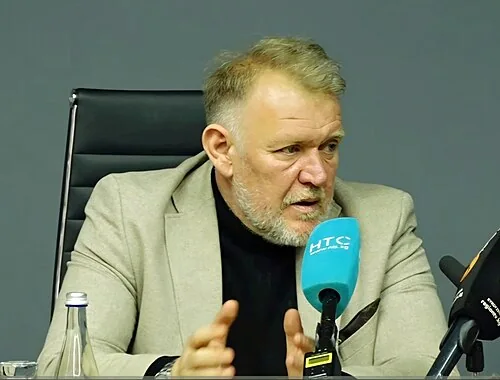

Photo source ↗Kyrgyz Sport TV @kyrgyzsporttv312 YouTube video (screenshot) · CC BY 3.0
The profile
Robert Prosinečki
Robert Prosinečki was a midfielder known for close control and passing. He played club football for Red Star Belgrade, Real Madrid and Barcelona.
Prosinečki played for Red Star Belgrade, Real Madrid and Barcelona. His control and passing helped teams move through midfield, and he later moved into coaching.
Prosinečki helped Yugoslavia reach the 1990 World Cup quarter-finals and appears in retrospective young-player selections for that edition. He later represented Croatia at World Cups.
1990Italy Quarter-finals
Group D West Germany4 : 1Yugoslavia
- Lothar MATTHAEUS28′
- Juergen KLINSMANN39′
- Lothar MATTHAEUS64′
- Rudi VOELLER70′
- Davor JOZIC55′
West Germanyhome
Starting lineup
- Bodo ILLGNER
- Stefan REUTER
- Andreas BREHME
- Klaus AUGENTHALER
- Guido BUCHWALD
- Thomas BERTHOLD
- Thomas HAESSLER
- Lothar MATTHAEUS
- Uwe BEIN
- Rudi VOELLER
- Juergen KLINSMANN
Substitutions
- 75′Pierre LITTBARSKI on · Uwe BEIN off
- 75′Andreas MOELLER on · Thomas HAESSLER off
Yugoslaviaaway
Starting lineup
- Tomislav IVKOVIC
- Predrag SPASIC
- Zoran VULIC
- Faruk HADZIBEGIC
- Davor JOZIC
- Srecko KATANEC
- Mirsad BALJIC
- Safet SUSIC
- Dragan STOJKOVIC
- Zlatko VUJOVIC
- Dejan SAVICEVIC
Substitutions
- 55′Dragoljub BRNOVIC on · Dejan SAVICEVIC off
- 55′Robert PROSINECKI on · Safet SUSIC off
Group D Yugoslavia4 : 1United Arab Emirates
- Safet SUSIC5′
- Darko PANCEV9′
- Darko PANCEV46′
- Robert PROSINECKI90′
- Ali Thani JUMAA22′
Yugoslaviahome
Starting lineup
- Tomislav IVKOVIC
- Vujadin STANOJKOVIC
- Predrag SPASIC
- Faruk HADZIBEGIC
- Davor JOZIC
- Dragoljub BRNOVIC
- Safet SUSIC
- Dragan STOJKOVIC
- Refik SABANADZOVIC
- Darko PANCEV
- Zlatko VUJOVIC
Substitutions
- 64′Zoran VULIC on · Zlatko VUJOVIC off
- 78′Robert PROSINECKI on · Refik SABANADZOVIC off
United Arab Emiratesaway
Starting lineup
- MUHSIN MUSABAH
- KHALEEL GHANIM
- Mohamed ABDULLAH
- IBRAHIM MEER
- EISSA MEER
- Abdulrahman AL HADDAD
- Ali Thani JUMAA
- KHALID ISMAIL
- NASIR KHAMEES
- ADNAN AL TALYANI
- HUSSAIN GHULOUM
Substitutions
- 35′Abdullah SULTAN on · NASIR KHAMEES off
- 45+1′FAHAD KHAMEES on · Ali Thani JUMAA off
Quarterfinal Argentina0 : 0Yugoslavia
Argentinahome
Starting lineup
- Sergio GOYCOCHEA
- Jose SERRIZUELA
- Oscar RUGGERI
- Juan SIMON
- Jose BASUALDO
- Gabriel CALDERON
- Jorge BURRUCHAGA
- Diego MARADONA
- Ricardo GIUSTI
- Julio OLARTICOECHEA
- Claudio CANIGGIA
Substitutions
- 51′Pedro TROGLIO on · Julio OLARTICOECHEA off
- 87′Gustavo DEZOTTI on · Gabriel CALDERON off
Yugoslaviaaway
Starting lineup
- Tomislav IVKOVIC
- Predrag SPASIC
- Zoran VULIC
- Faruk HADZIBEGIC
- Davor JOZIC
- Dragoljub BRNOVIC
- Safet SUSIC
- Dragan STOJKOVIC
- Robert PROSINECKI
- Refik SABANADZOVIC
- Zlatko VUJOVIC
Substitutions
- 61′Dejan SAVICEVIC on · Safet SUSIC off
1998France
Third place
Group H Jamaica1 : 3Croatia
- Robert EARLE45′
- Mario STANIC27′
- Robert PROSINECKI53′
- Davor SUKER69′
Jamaicahome
Starting lineup
- Warren BARRETT
- Ian GOODISON
- Ricardo GARDNER
- Onandi LOWE
- Frank SINCLAIR
- Fitzroy SIMPSON
- Peter CARGILL
- Theodore WHITMORE
- Robert EARLE
- Deon BURTON
- Paul HALL
Substitutions
- 69′Darryl POWELL on · Peter CARGILL off
- 74′Andrew WILLIAMS on · Robert EARLE off
- 81′Walter BOYD on · Paul HALL off
Croatiaaway
Starting lineup
- Drazen LADIC
- Igor STIMAC
- Slaven BILIC
- Zvonimir SOLDO
- Dario SIMIC
- Aljosa ASANOVIC
- Robert PROSINECKI
- Zvonimir BOBAN
- Mario STANIC
- Robert JARNI
- Davor SUKER
Substitutions
- 74′Goran VLAOVIC on · Dario SIMIC off
Group H Japan0 : 1Croatia
- Davor SUKER77′
Japanhome
Starting lineup
- Yoshikatsu KAWAGUCHI
- Akira NARAHASHI
- Naoki SOMA
- Masami IHARA
- Yutaka AKITA
- Eisuke NAKANISHI
- Motohiro YAMAGUCHI
- Hidetoshi NAKATA
- Hiroshi NANAMI
- Masashi NAKAYAMA
- Shoji JO
Substitutions
- 61′Masayuki OKANO on · Masashi NAKAYAMA off
- 79′Hiroaki MORISHIMA on · Akira NARAHASHI off
- 84′Wagner LOPES on · Hiroshi NANAMI off
Croatiaaway
Starting lineup
- Drazen LADIC
- Igor STIMAC
- Slaven BILIC
- Zvonimir SOLDO
- Dario SIMIC
- Aljosa ASANOVIC
- Robert PROSINECKI
- Mario STANIC
- Robert JARNI
- Krunoslav JURCIC
- Davor SUKER
Substitutions
- 45+1′Goran VLAOVIC on · Igor STIMAC off
- 67′Silvio MARIC on · Robert PROSINECKI off
- 88′Igor TUDOR on · Mario STANIC off
Group H Argentina1 : 0Croatia
- Mauricio PINEDA36′
Argentinahome
Starting lineup
- Carlos ROA
- Roberto AYALA
- Mauricio PINEDA
- Pablo PAZ
- Nelson VIVAS
- Javier ZANETTI
- Matias ALMEYDA
- Ariel ORTEGA
- Juan VERON
- Marcelo GALLARDO
- Gabriel BATISTUTA
Substitutions
- 52′Claudio LOPEZ on · Ariel ORTEGA off
- 67′Diego SIMEONE on · Javier ZANETTI off
- 80′Sergio BERTI on · Marcelo GALLARDO off
Croatiaaway
Starting lineup
- Drazen LADIC
- Slaven BILIC
- Zvonimir SOLDO
- Dario SIMIC
- Aljosa ASANOVIC
- Robert PROSINECKI
- Zvonimir BOBAN
- Silvio MARIC
- Mario STANIC
- Robert JARNI
- Davor SUKER
Substitutions
- 45+1′Goran VLAOVIC on · Silvio MARIC off
- 67′Igor STIMAC on · Robert PROSINECKI off
Semifinal France2 : 1Croatia
- Lilian THURAM47′
- Lilian THURAM70′
- Davor SUKER46′
Francehome
Starting lineup
- Fabien BARTHEZ
- Bixente LIZARAZU
- Laurent BLANC
- Marcel DESAILLY
- Lilian THURAM
- Christian KAREMBEU
- Didier DESCHAMPS
- Zinedine ZIDANE
- Emmanuel PETIT
- Youri DJORKAEFF
- Stephane GUIVARCH
Substitutions
- 31′Thierry HENRY on · Christian KAREMBEU off
- 68′David TREZEGUET on · Stephane GUIVARCH off
- 77′Frank LEBOEUF on · Youri DJORKAEFF off
Croatiaaway
Starting lineup
- Drazen LADIC
- Igor STIMAC
- Slaven BILIC
- Zvonimir SOLDO
- Dario SIMIC
- Aljosa ASANOVIC
- Zvonimir BOBAN
- Mario STANIC
- Robert JARNI
- Davor SUKER
- Goran VLAOVIC
Substitutions
- 63′Silvio MARIC on · Zvonimir BOBAN off
- 89′Robert PROSINECKI on · Mario STANIC off
Third-place match Netherlands1 : 2Croatia
- Boudewijn ZENDEN22′
- Robert PROSINECKI14′
- Davor SUKER36′
Netherlandshome
Starting lineup
- Edwin VAN DER SAR
- Jaap STAM
- Frank DE BOER
- Arthur NUMAN
- Wim JONK
- Clarence SEEDORF
- Phillip COCU
- Edgar DAVIDS
- Dennis BERGKAMP
- Patrick KLUIVERT
- Boudewijn ZENDEN
Substitutions
- 46′Marc OVERMARS on · Phillip COCU off
- 58′Pierre VAN HOOIJDONK on · Dennis BERGKAMP off
Croatiaaway
Starting lineup
- Drazen LADIC
- Igor STIMAC
- Slaven BILIC
- Zvonimir SOLDO
- Aljosa ASANOVIC
- Robert PROSINECKI
- Zvonimir BOBAN
- Mario STANIC
- Robert JARNI
- Krunoslav JURCIC
- Davor SUKER
Substitutions
- 79′Goran VLAOVIC on · Robert PROSINECKI off
- 86′Igor TUDOR on · Zvonimir BOBAN off
2002Korea + Japan
Group stage
Group G Croatia0 : 1Mexico
- Cuauhtemoc BLANCO60′ · pen.
Croatiahome
Starting lineup
- Stipe PLETIKOSA
- Josip SIMUNIC
- Stjepan TOMAS
- Boris ZIVKOVIC
- Robert JARNI
- Robert KOVAC
- Robert PROSINECKI
- Niko KOVAC
- Zvonimir SOLDO
- Davor SUKER
- Alen BOKSIC
Substitutions
- 45′Milan RAPAIC on · Robert PROSINECKI off
- 64′Daniel SARIC on · Davor SUKER off
- 67′Mario STANIC on · Alen BOKSIC off
Mexicoaway
Starting lineup
- Oscar PEREZ
- Manuel VIDRIO
- Salvador CARMONA
- Rafael MARQUEZ
- Gerardo TORRADO
- Ramon MORALES
- Braulio LUNA
- Sigifredo MERCADO
- Gabriel CABALLERO
- Jared BORGETTI
- Cuauhtemoc BLANCO
Substitutions
- 68′Luis HERNANDEZ on · Jared BORGETTI off
- 79′Francisco PALENCIA on · Cuauhtemoc BLANCO off